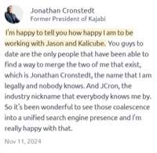

What Google’s John Mueller says about Jason Barnard
“From Google’s side, [Knowledge Panels] are just algorithmic. I honestly don’t know anyone else externally who has as much insight.”
The gap between who you are and what Google and AI understand about you
Search engines and AI build their picture of your brand from what they find across your digital ecosystem. When that information is incomplete, inconsistent or unclear, what they understand drifts away from who you really are.
Who you are
AI has incomplete information
What you do
AI shows outdated information
Your expertise
AI underestimates you
Your achievements
AI underrepresents you
What makes you different
AI doesn’t explain it
What you want to be known for
AI tells the wrong story
What Digital Brand Engineering is
“Digital Brand Engineering is the process of engineering how search engines and AI understand, trust and recommend a person or a company.”
 Jason BarnardFounder and CEO, Kalicube
Jason BarnardFounder and CEO, Kalicube
The problems clients come to Kalicube to solve
How Kalicube works with entrepreneurs, and with companies
Kalicube engineers the digital brands of entrepreneurs and of companies differently, with an approach built for the needs of each.
Your digital brand, engineered for you
Kalicube engineers your digital brand for you. For entrepreneurs and executives who want Kalicube’s Digital Brand Engineers to engineer how Google, ChatGPT and AI search understand, represent and recommend them.

“You guys are the only people that have been able to find a way to merge the two of me that exist: the name nobody knows, and the nickname everybody knows by.”
Strategy, and a platform your team runs
Strategy and intelligence for your team to implement. Kalicube builds the Digital Brand Engineering strategy, and Kalicube Pro gives your team the intelligence to run it every week, brand by brand.
“Kalicube Pro changes the game in reputation management. Brand Reputation on Steroids.”
Want your own marketing team to run it? Kalicube Pro is the platform any team can run
How Google, ChatGPT and AI search build their understanding of your brand
Your website matters, but so do your profiles, third-party sources, knowledge graphs, media coverage, reviews and the relationships between them. Search engines and AI read all of it.
Digital Brand Engineering
works at the source, across your whole digital ecosystem.
It aligns the information and signals in every one of these places, so Google, ChatGPT and AI search get one clear, consistent and credible picture of your brand.
Kalicube Pro
is the Digital Brand Intelligence platform underneath our work.
Every week it collects and analyses the information and relationships across your digital ecosystem, and shows what supports or contradicts the brand you want to establish.
Why brands trust Kalicube: Jason Barnard’s record and the Kalicube Pro platform
Jason explains it. Kalicube applies it. Kalicube Pro powers it.

Powered by Kalicube Pro
Kalicube Pro is Jason’s thinking, encoded, and it is the platform Kalicube’s own team runs on. Every week it collects the data, analyses it in the context of each brand’s strategy, and tells the team what to do next.
Microsoft, Ahrefs, Yoast and Semrush have all asked Kalicube to help with their brand.
A proven methodology for Digital Brand Engineering and digital marketing strategy, run on Kalicube Pro for every client.
Get a free AI audit and strategy for your brand
The audit and strategy apply The Kalicube Process to your brand, and show you what to address first.